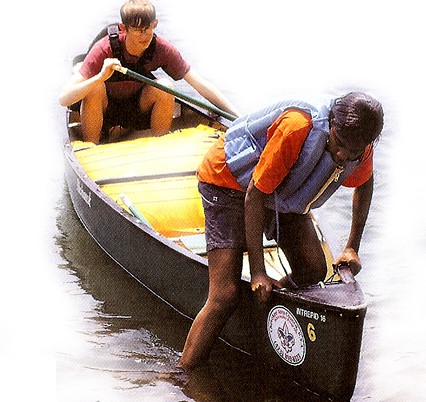
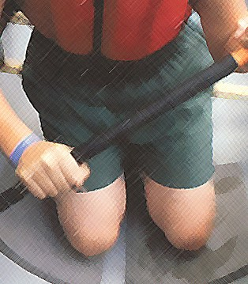
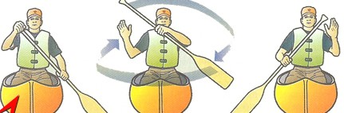
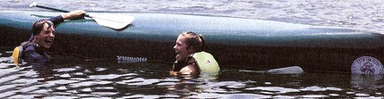
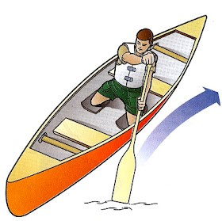

- معدات رياضة التجديف:
تشتمل رياضة التجديف على العديد من المعدات التي يتم استخدامها خلال ممارستها، ومن ضمن هذه المعدات ما يتم استخدامه لسلامة اللاعبين أثناء التجديف بالإضافة إلى مايتم استخدامه من أجل ممارسة اللعبة من خلاله، ومن هذه المعدات القوارب أو الأصداف وهي عبارة قوارب طويلة وضيقة وشبه دائرية بشكل واسع بالإضافة إلى أنها تحتوي على مقطع عرضي مناسب وذلك من أجل تقليل سحب القارب إلى الحد الأدنى من المياه، ويتم صناعة القوارب والأصداف من الخشب بالإضافة إلى بعض المواد المركبة مثل البلاستيك المقوى ومن المعدات المستخدمة في هذه الرياضة أيضًا المجداف وهو عبارة عن ذراع خشبي ذو مقبض بلاستيكي أو جلدي حيث يبلغ عدد المجاديف المستخدمة في هذه الرياضة 1 أو 2 أو 4 أو 8 مجاديف، ومن المعدات المستخدمة أيضًا وذات الأهمية هي الدفة ومهمتها تصحيح خط سير القارب كما أنها تساهم بتوجيه حركته بالشكل الصحيح لجهة اليمين أو اليسار حسب حركة المجداف من خلال اللاعبين، حيث تعد حركة المجداف الموجه الرئيس لاتجاه القارب وفقًا لحركة يدين اللاعبين أثناء ممارسة التجديف.
اجزاء قارب التجديف:
1/ ألمقدمة (البروة).
2/ المؤخرة ( ألاش).
3/ مقعد خلفي.
4/ مقعد إمامي.
5/ مقعد أوسط.
6/ الأرضية.
7 / العيدان.
8/ الجانب.
9/ حافة السور.
10/ بيت الجالية.
11/ الدفة.
12/ يد الدفة.
كيفية ركوب القارب والنزول منه:
أولاً: إذا كنت بمفردك:
- ضع المجدافين اسفل المقاعد.
- ادفع القارب من مؤخرته في الماء، وبمجرد أن يطفو في الماء اصعد عليه.
- اجلس مكانك وثبت المجدافين في مكانهما.
ثانياً إذا كان معك زميل:
- اجعل زميلك يجلس في مقدمة القارب مع وضع المجداف معترضا على القارب.
- ادفع القارب تجاه الماء وبمجرد ان يطفو اصعد عليه.
- اجلس على مقعدك وسوف ترتفع مقدمة القارب وبذلك يمكنك أن تبدأ التجديف والابتعاد عن الشاطئ.
- للنزول من القارب اتبع نفس الخطوات السابقة عكسياً.
وضع التجديف:
بالنسبة للقارب المفرد يكون التجديف من منتصف القارب تقريباً مع بقاء المجدف في مواجهة المقدمة مع الحفاظ على التوازن، كما يجب أن تكون مقدمة القارب أعلى قليلاً من المؤخرة.
والمجدف الماهر لا يجلس في القارب بل يركع على ركبتيه فهذا يجعل القارب أكثر ثباتا واستقرارً، كما أنه يتيح للمجدف التجديف بقوة أكبر.

ومن الطرق الشائعة لتجديف المبتدئ التالي:
- اركع على ركبتيك على قاع القارب وارتكز على المقعد.
- اركع على ركبتك القريبة من الجانب الذي تجدف منه واستخدم المقعد كسند مساعد ثم مد رجلك الأخرى للأمام مع وضع القدم بثبات فوق القاع.
- خذ الوضع الأول مع بقاء فخذاك وجزعك في وضع انتصاب مع الاتجاه بالجسم قليلاتجاه الجانب الذي تجدف منه.

مسك المجداف:
- اقبض بيديك اليسرى على يد المجداف على مسافة 6 بوصة أعلى راحة المجداف.
- ضع يدك اليمنى أعلى مقبض المجداف بحيث تستقر في راحة اليد، وهذا الوضع يتيح لك التجديف على الجانب الأيسر، أما للتجديف على الجانب الأيمن فيلزمك عكس وضع االقبض على المجداف.

انقلاب القارب:
اذا انقلب بك القارب في الماء، أو سقطت منه فيجب عليك التصرف حسب الآلية التالية:
- إذا سقطت وكنت قريباً من الشاطئ، والقارب على وضعه لم ينقلب فاسبح تجاه الشاطئ دافعاً القارب أمامك.
- إذا انقلب القارب اعدله بالسباحة إلى أحد جانبيه ووضع إحدى يديك على الحافة العليا البعيدة للقارب واليد الأخرى على الحافة القريبة ثم اضرب بقدمك لترفع جسمك لأعلى واجذب جسمك للجانب البعيد ثم دحرج جسمك ليستقر في قاع القارب.
- لتفريغ القارب من الماء هناك طريقتان:
1/ اسبح لمقدمة القارب ثم اضغط على المقدمة إلى الأسفل مع دفع القارب بقوة للأمام وبذلك ترتفع مؤخرة القارب ويندفع الماء للخارج من الأمام.
2/ اسبح لأحد جنبي القارب وامسك بحافته، ثم ابدأ بتفريغ الماء من القارب بواسطة جردل خاص عادة ما يكون مثبت بالمقاعد.
- إذا كان المجداف موجودا فادفع به تحت المقعد، أما إذا كان طافياً بعيداً عن القارب فلا تحاول الوصول إليه.
- إذا كانت سرعة المياه قوية، ويصعب عليك تعديل القارب المقلوب، فعليك أن تمسك به من المنتصف،كما يمكنك الصعود عليه والجلوس في المنتصف منتظرا النجدة، ولا تحاول أن تبتعد عن القارب فلن يغرق بمشيئة الله، كما أن مشاهدة القارب أسهل من مشاهدتك بالنسبة لفريق الإنقاذ.

احتياطات الصيانة:
- لا تترك جزءا من القارب فقط طافياً فوق الماء لأن ذلك يسبب تلف القارب.
- لا تجلس أو تقف على لاقارب عندما يكون على اليابسة.
- عند اخراج القارب من الماء احفظه بعيداً عن الشمس، وقاعه للأعلى، ومن الأفضل أن يكون مرتفعاً عن الأرض.
- عند تخزين القارب لفترة طويلة يجب أن يكون التخزين داخل المبنى وليس في العراء.
- احفظ القارب نظيفاً دائماً، ونظفه قبل التخزين وكذلك عند الرغبة في استعماله.
- تأكد من وجود الطلاء دائماً على جميع أجزاء القارب.
- قبل طلاء القارب أو أي جزء منه ابدأ بالصنفرة لإزالة الطبقة السابقة.
- بادر بعلاج أي شقوق أو شروخ تستجد في القارب.
طبقات من الماء الأبيض:
والمعروف باسم “النطاق الدولي لصعوبة الأنهار” ، وهي أدناه درجات الصعوبة الست في تجمع المياه البيضاء. وهي تتراوح بين الموت البسيط والخطير والوفيات المحتملة أو الإصابات الخطيرة
الفئة 1: مناطق خشنة صغيرة جدًا ، قد تتطلب مناورة بسيطة. (مستوى المهارة: أساسي جدا)
الفئة 2: قد تتطلب بعض المياه القاسية ، ربما بعض الصخور ، بعض المناورة. (مستوى المهارة: مهارة التجديف الأساسية)
الفئة 3: موجات صغيرة ، ربما قطرة صغيرة ، ولكن لا يوجد خطر كبير. قد يتطلب مناورة كبيرة. (مستوى المهارة: بعض الخبرة في ركوب الرمث)
الفئة 4: وايت ووتر ، أمواج متوسطة ، ربما صخور ، ربما انخفاض كبير ، قد تكون هناك حاجة إلى مناورات حادة. (مستوى المهارة: تجربة تجديف استثنائية)
الفئة 5: تتطلب المياه البيضاء والأمواج الكبيرة والحجم الكبير وإمكانية الصخور والمخاطر الكبيرة ، إمكانية حدوث انخفاض كبير ، مناورة دقيقة. (مستوى المهارة: الإتقان الكامل للتجديف)
الفئة 6: تعتبر المنحدرات من الدرجة 6 شديدة الخطورة بحيث لا يمكن تجاوزها على نحو آمن على نحو موثوق. يمكن للعوارض الخشبية أن تتوقع مواجهة مياه بيضاء كبيرة ، وموجات ضخمة ، وصخور كبيرة ومخاطر ، و / أو قطرات كبيرة من شأنها أن تنقل تأثيرات حادة تتجاوز القدرات الهيكلية وتصنيفات التأثير في جميع معدات التجديف تقريبًا. إن عبور فئة 6 السريع له احتمال كبير في إنهاء الإصابة أو الوفاة بشكل خطير مقارنة بالفئات الأقل. (مستوى المهارة: التمكن الكامل من التجديف ، وحتى بعد ذلك قد لا تكون آمنة)
